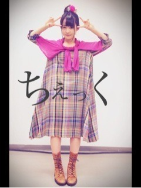

| 2013/03 16 Sat | 385回目*marika |
個別握手会in幕張メッセ
来てくださったみなさん
ありがとうございました。
1部 ゆる巻き
シャツ 45rpm
ベスト FRAMeWORK
パンツ On y vua
ブーツ vibram
ベストにいっぱいバッヂ
つけてみた
 ボーイッシュ
ボーイッシュ
ボーイッシュ
2部 お団子

ワンピース KAPITAL
巻いてるカーディガン bulle de savon
ポンポン髪飾り カオリノモリ
3部 巻きツインテール
ネックレスは素敵なアーティストさん
に作ってもらったやつ！むふふ
バースデーライブの感想や
MV、個人pvの感想や
とても嬉しかったです。
乃木坂の握手会に初めて来たという
方もいて、嬉しかったなあ。
なんか握手会での髪型のリクエスト
ツインテールが多い気がする。
みんなそんなに
ツインテールがすきなのか

終わったあと
会場覗いてみようってなって
歩いて観察してたけども
たくさんの方が柵の前まで
来てくれてなんかトークショー
みたいになった。
全く計画してなかったので
ぐたぐたやった。
そんで、あすかの無茶振りによって
勢いで個人pvの歌をちょっと
歌ってしまったという...！
あの場を借りて披露したのは
本気で恥ずかしかったけど
みなさんが喜んでくださったので！
あすか、ありがとうございました。←
しかし握手会で盛り上がっている中
歌まで歌ってしまって、
会話の邪魔だったと思います...
すみませんでした。土下座
............
次は20日の全握と
チャリティイベント。
第14レーン:伊藤寧々/伊藤万理華
まさかの伊藤ちゃんず

これは来ないと損だよ！
来ないと損だよ！
まりか
コメント(322)
2013/03/16 23:00